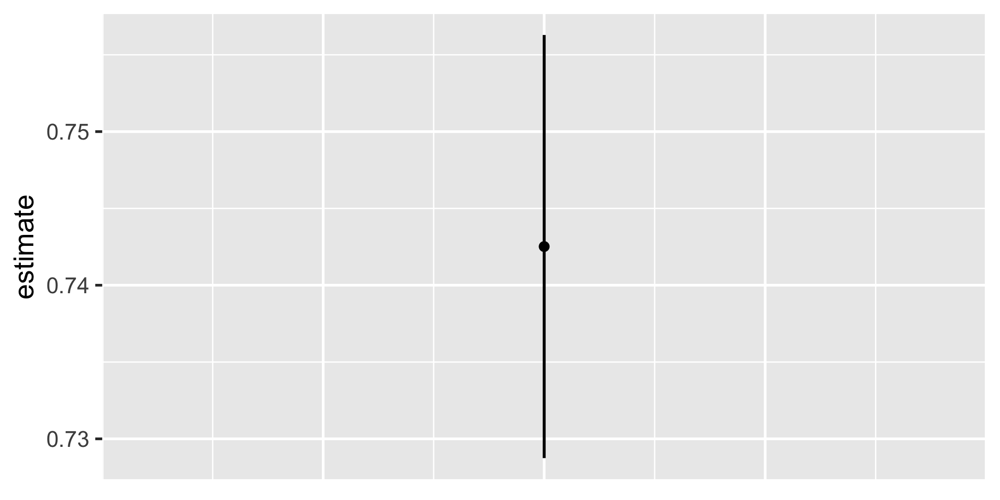

Uncertainty
POLI_SCI 403: Probability and Statistics
Agenda
Confidence intervals
Hypothesis testing
Lab
So far
Random variables to think about statistical properties before collecting data
i.i.d. sample to enable inference from estimators to estimands
Statistical properties of (point) estimators
This week: Convey uncertainty around estimates
Remember
There are two kinds of variance estimators
Sample variance: \(\widehat V[X]\) (…of random variable \(X\))
Sampling variance: \(V[\overline X]\) (…of an estimator)
We usually report sample variance (or SD) to describe our data
We use sampling variance to convey uncertainty around the estimates we produce
Data
Back to GSS
Pretend whole sample is the population
Make function to get sample mean
Repeat many times
mean
1 0.74
2 0.75
3 0.76
4 0.72
5 0.75
6 0.69
7 0.79
8 0.76
9 0.75
10 0.69
11 0.71
12 0.73
13 0.78
14 0.68
15 0.73
16 0.73
17 0.74
18 0.80
19 0.69
20 0.76
21 0.68
22 0.71
23 0.75
24 0.66
25 0.72
26 0.77
27 0.78
28 0.69
29 0.76
30 0.75
31 0.72
32 0.71
33 0.78
34 0.80
35 0.79
36 0.73
37 0.71
38 0.71
39 0.74
40 0.70
41 0.79
42 0.73
43 0.66
44 0.70
45 0.68
46 0.79
47 0.69
48 0.76
49 0.70
50 0.74
51 0.71
52 0.71
53 0.76
54 0.72
55 0.70
56 0.68
57 0.78
58 0.76
59 0.75
60 0.83
61 0.78
62 0.72
63 0.75
64 0.72
65 0.78
66 0.68
67 0.76
68 0.71
69 0.80
70 0.63
71 0.73
72 0.67
73 0.82
74 0.75
75 0.69
76 0.72
77 0.75
78 0.73
79 0.69
80 0.68
81 0.74
82 0.72
83 0.70
84 0.81
85 0.74
86 0.69
87 0.74
88 0.70
89 0.76
90 0.70
91 0.70
92 0.80
93 0.72
94 0.65
95 0.74
96 0.64
97 0.71
98 0.70
99 0.73
100 0.74
101 0.74
102 0.71
103 0.77
104 0.77
105 0.76
106 0.76
107 0.72
108 0.73
109 0.73
110 0.68
111 0.69
112 0.75
113 0.76
114 0.72
115 0.74
116 0.80
117 0.81
118 0.77
119 0.75
120 0.72
121 0.76
122 0.73
123 0.75
124 0.69
125 0.71
126 0.72
127 0.78
128 0.77
129 0.75
130 0.78
131 0.74
132 0.65
133 0.76
134 0.72
135 0.68
136 0.79
137 0.79
138 0.73
139 0.70
140 0.78
141 0.76
142 0.72
143 0.74
144 0.68
145 0.74
146 0.76
147 0.72
148 0.72
149 0.75
150 0.77
151 0.82
152 0.73
153 0.77
154 0.67
155 0.73
156 0.73
157 0.67
158 0.75
159 0.79
160 0.80
161 0.74
162 0.75
163 0.70
164 0.75
165 0.73
166 0.69
167 0.69
168 0.84
169 0.75
170 0.81
171 0.82
172 0.68
173 0.68
174 0.76
175 0.75
176 0.71
177 0.72
178 0.75
179 0.74
180 0.71
181 0.78
182 0.70
183 0.75
184 0.73
185 0.66
186 0.71
187 0.74
188 0.78
189 0.76
190 0.67
191 0.71
192 0.74
193 0.74
194 0.75
195 0.73
196 0.74
197 0.71
198 0.74
199 0.76
200 0.70
201 0.81
202 0.75
203 0.69
204 0.68
205 0.80
206 0.80
207 0.79
208 0.65
209 0.79
210 0.71
211 0.79
212 0.71
213 0.82
214 0.77
215 0.76
216 0.75
217 0.71
218 0.68
219 0.74
220 0.75
221 0.77
222 0.77
223 0.67
224 0.72
225 0.76
226 0.78
227 0.67
228 0.69
229 0.74
230 0.76
231 0.73
232 0.75
233 0.77
234 0.71
235 0.79
236 0.70
237 0.83
238 0.72
239 0.74
240 0.76
241 0.74
242 0.74
243 0.69
244 0.78
245 0.78
246 0.69
247 0.79
248 0.76
249 0.79
250 0.73
251 0.75
252 0.71
253 0.74
254 0.73
255 0.76
256 0.68
257 0.68
258 0.77
259 0.79
260 0.72
261 0.77
262 0.74
263 0.72
264 0.68
265 0.78
266 0.73
267 0.69
268 0.76
269 0.73
270 0.71
271 0.82
272 0.83
273 0.76
274 0.82
275 0.78
276 0.71
277 0.74
278 0.77
279 0.81
280 0.79
281 0.74
282 0.72
283 0.77
284 0.73
285 0.70
286 0.81
287 0.76
288 0.76
289 0.71
290 0.76
291 0.87
292 0.77
293 0.75
294 0.76
295 0.72
296 0.75
297 0.72
298 0.74
299 0.74
300 0.69
301 0.75
302 0.77
303 0.69
304 0.76
305 0.82
306 0.81
307 0.70
308 0.79
309 0.73
310 0.74
311 0.70
312 0.73
313 0.75
314 0.74
315 0.77
316 0.80
317 0.75
318 0.71
319 0.74
320 0.75
321 0.75
322 0.79
323 0.73
324 0.74
325 0.79
326 0.78
327 0.72
328 0.74
329 0.70
330 0.76
331 0.79
332 0.74
333 0.71
334 0.72
335 0.72
336 0.66
337 0.71
338 0.77
339 0.71
340 0.77
341 0.74
342 0.74
343 0.77
344 0.72
345 0.71
346 0.67
347 0.62
348 0.72
349 0.81
350 0.77
351 0.78
352 0.71
353 0.81
354 0.73
355 0.73
356 0.79
357 0.71
358 0.75
359 0.70
360 0.78
361 0.76
362 0.83
363 0.79
364 0.79
365 0.72
366 0.77
367 0.74
368 0.72
369 0.68
370 0.78
371 0.74
372 0.74
373 0.81
374 0.74
375 0.75
376 0.79
377 0.68
378 0.74
379 0.77
380 0.80
381 0.74
382 0.75
383 0.77
384 0.71
385 0.74
386 0.74
387 0.70
388 0.74
389 0.76
390 0.78
391 0.66
392 0.63
393 0.71
394 0.77
395 0.71
396 0.74
397 0.81
398 0.73
399 0.67
400 0.72
401 0.70
402 0.76
403 0.73
404 0.70
405 0.73
406 0.78
407 0.71
408 0.71
409 0.77
410 0.73
411 0.72
412 0.71
413 0.74
414 0.70
415 0.78
416 0.77
417 0.79
418 0.74
419 0.78
420 0.81
421 0.77
422 0.78
423 0.74
424 0.81
425 0.70
426 0.77
427 0.69
428 0.70
429 0.78
430 0.73
431 0.64
432 0.77
433 0.76
434 0.80
435 0.65
436 0.78
437 0.74
438 0.79
439 0.67
440 0.81
441 0.78
442 0.72
443 0.74
444 0.76
445 0.74
446 0.72
447 0.80
448 0.73
449 0.73
450 0.71
451 0.71
452 0.69
453 0.67
454 0.71
455 0.71
456 0.78
457 0.79
458 0.81
459 0.77
460 0.85
461 0.73
462 0.70
463 0.76
464 0.70
465 0.75
466 0.74
467 0.68
468 0.68
469 0.70
470 0.79
471 0.76
472 0.69
473 0.75
474 0.71
475 0.70
476 0.79
477 0.75
478 0.76
479 0.77
480 0.71
481 0.67
482 0.73
483 0.83
484 0.67
485 0.65
486 0.69
487 0.77
488 0.78
489 0.73
490 0.82
491 0.76
492 0.76
493 0.77
494 0.72
495 0.68
496 0.77
497 0.76
498 0.69
499 0.72
500 0.81
501 0.73
502 0.71
503 0.74
504 0.70
505 0.72
506 0.64
507 0.73
508 0.74
509 0.72
510 0.76
511 0.75
512 0.69
513 0.73
514 0.74
515 0.73
516 0.68
517 0.79
518 0.78
519 0.80
520 0.71
521 0.81
522 0.75
523 0.78
524 0.79
525 0.67
526 0.73
527 0.79
528 0.72
529 0.76
530 0.84
531 0.73
532 0.75
533 0.69
534 0.70
535 0.83
536 0.81
537 0.68
538 0.80
539 0.74
540 0.81
541 0.77
542 0.74
543 0.70
544 0.69
545 0.74
546 0.76
547 0.70
548 0.77
549 0.81
550 0.77
551 0.74
552 0.72
553 0.71
554 0.80
555 0.74
556 0.74
557 0.69
558 0.77
559 0.75
560 0.80
561 0.77
562 0.73
563 0.78
564 0.72
565 0.81
566 0.75
567 0.77
568 0.79
569 0.77
570 0.77
571 0.73
572 0.81
573 0.76
574 0.76
575 0.74
576 0.82
577 0.72
578 0.78
579 0.71
580 0.64
581 0.81
582 0.76
583 0.73
584 0.71
585 0.74
586 0.79
587 0.80
588 0.71
589 0.76
590 0.68
591 0.75
592 0.69
593 0.73
594 0.80
595 0.74
596 0.69
597 0.81
598 0.68
599 0.75
600 0.78
601 0.67
602 0.82
603 0.80
604 0.75
605 0.75
606 0.82
607 0.88
608 0.71
609 0.73
610 0.75
611 0.81
612 0.65
613 0.68
614 0.76
615 0.72
616 0.80
617 0.76
618 0.71
619 0.77
620 0.78
621 0.77
622 0.73
623 0.71
624 0.74
625 0.76
626 0.79
627 0.75
628 0.73
629 0.82
630 0.69
631 0.81
632 0.75
633 0.79
634 0.77
635 0.75
636 0.75
637 0.70
638 0.76
639 0.71
640 0.74
641 0.71
642 0.76
643 0.74
644 0.77
645 0.69
646 0.69
647 0.80
648 0.71
649 0.75
650 0.63
651 0.70
652 0.70
653 0.72
654 0.72
655 0.75
656 0.71
657 0.81
658 0.77
659 0.70
660 0.86
661 0.71
662 0.71
663 0.67
664 0.74
665 0.82
666 0.71
667 0.73
668 0.76
669 0.79
670 0.75
671 0.79
672 0.80
673 0.78
674 0.74
675 0.71
676 0.79
677 0.79
678 0.80
679 0.79
680 0.71
681 0.76
682 0.77
683 0.74
684 0.69
685 0.77
686 0.79
687 0.76
688 0.69
689 0.75
690 0.71
691 0.67
692 0.76
693 0.74
694 0.71
695 0.74
696 0.71
697 0.71
698 0.71
699 0.79
700 0.71
701 0.74
702 0.81
703 0.73
704 0.71
705 0.79
706 0.77
707 0.74
708 0.75
709 0.71
710 0.73
711 0.73
712 0.78
713 0.72
714 0.74
715 0.70
716 0.81
717 0.73
718 0.72
719 0.67
720 0.73
721 0.68
722 0.70
723 0.80
724 0.78
725 0.79
726 0.68
727 0.74
728 0.71
729 0.76
730 0.87
731 0.75
732 0.69
733 0.66
734 0.74
735 0.75
736 0.79
737 0.77
738 0.69
739 0.76
740 0.71
741 0.73
742 0.70
743 0.71
744 0.73
745 0.70
746 0.78
747 0.74
748 0.70
749 0.83
750 0.68
751 0.67
752 0.77
753 0.77
754 0.81
755 0.71
756 0.71
757 0.66
758 0.72
759 0.77
760 0.78
761 0.69
762 0.71
763 0.65
764 0.74
765 0.69
766 0.70
767 0.71
768 0.70
769 0.72
770 0.74
771 0.75
772 0.79
773 0.77
774 0.74
775 0.76
776 0.74
777 0.75
778 0.78
779 0.66
780 0.73
781 0.66
782 0.77
783 0.77
784 0.71
785 0.76
786 0.74
787 0.75
788 0.78
789 0.74
790 0.75
791 0.79
792 0.75
793 0.80
794 0.72
795 0.74
796 0.75
797 0.72
798 0.84
799 0.77
800 0.72
801 0.73
802 0.67
803 0.80
804 0.76
805 0.71
806 0.79
807 0.79
808 0.83
809 0.67
810 0.76
811 0.72
812 0.83
813 0.74
814 0.83
815 0.77
816 0.76
817 0.80
818 0.82
819 0.72
820 0.80
821 0.72
822 0.77
823 0.65
824 0.67
825 0.82
826 0.78
827 0.77
828 0.75
829 0.76
830 0.77
831 0.72
832 0.74
833 0.74
834 0.70
835 0.69
836 0.78
837 0.69
838 0.67
839 0.77
840 0.74
841 0.72
842 0.73
843 0.72
844 0.79
845 0.74
846 0.69
847 0.79
848 0.71
849 0.70
850 0.71
851 0.72
852 0.63
853 0.75
854 0.71
855 0.79
856 0.68
857 0.73
858 0.71
859 0.70
860 0.77
861 0.76
862 0.71
863 0.77
864 0.66
865 0.81
866 0.80
867 0.83
868 0.71
869 0.75
870 0.74
871 0.72
872 0.68
873 0.73
874 0.72
875 0.79
876 0.71
877 0.72
878 0.76
879 0.72
880 0.76
881 0.72
882 0.77
883 0.81
884 0.69
885 0.84
886 0.75
887 0.71
888 0.78
889 0.73
890 0.80
891 0.79
892 0.80
893 0.66
894 0.79
895 0.76
896 0.78
897 0.71
898 0.66
899 0.75
900 0.78
901 0.72
902 0.75
903 0.69
904 0.76
905 0.79
906 0.70
907 0.70
908 0.69
909 0.77
910 0.78
911 0.77
912 0.77
913 0.77
914 0.80
915 0.85
916 0.71
917 0.75
918 0.70
919 0.76
920 0.75
921 0.79
922 0.77
923 0.71
924 0.77
925 0.71
926 0.72
927 0.77
928 0.71
929 0.69
930 0.76
931 0.77
932 0.77
933 0.78
934 0.73
935 0.67
936 0.77
937 0.70
938 0.75
939 0.71
940 0.72
941 0.80
942 0.70
943 0.75
944 0.72
945 0.77
946 0.75
947 0.75
948 0.77
949 0.78
950 0.78
951 0.78
952 0.78
953 0.74
954 0.72
955 0.72
956 0.74
957 0.81
958 0.78
959 0.72
960 0.81
961 0.74
962 0.70
963 0.71
964 0.78
965 0.71
966 0.80
967 0.67
968 0.70
969 0.66
970 0.83
971 0.78
972 0.86
973 0.70
974 0.76
975 0.74
976 0.72
977 0.74
978 0.73
979 0.77
980 0.76
981 0.65
982 0.73
983 0.78
984 0.72
985 0.72
986 0.71
987 0.76
988 0.83
989 0.74
990 0.81
991 0.78
992 0.77
993 0.68
994 0.68
995 0.82
996 0.73
997 0.74
998 0.69
999 0.74
1000 0.67This gives a resampling distribution
Then we estimate the variance of the resampling distribution
Good?
Hold on
No one repeats the study many times!
If you have resources for 100 participants 1,000 times
You have resources for 100,000 participants one time!
What we do instead
Leverage asymptotic properties (CLT) to find a shortcut to calculate uncertainty around our estimate without having to redo the whole study many times
This is called calculating standard errors (confidence intervals, p-values) via analytic derivation
They are (only) asymptotically valid iff i.i.d. assumption holds
Which is implies the CLT will “kick in” with a large enough sample
Confidence intervals
Steps
Choose \(\alpha \in (0,1)\)
Confidence level is \(100 \times (1-\alpha)\)
Choose estimand \(\theta\) and estimator \(\widehat \theta\)
Steps
Then we get normal approximation-based confidence intervals
\[ CI_{1-\alpha}(\theta) = (\widehat \theta - z_{(1-\frac{\alpha}{2})} \sqrt{\widehat V [\widehat{\theta}]}, \widehat \theta + z_{(1-\frac{\alpha}{2})} \sqrt{\widehat V [\widehat{\theta}]}) \]
where \(z_*\) denotes the quantile of the standard normal distribution \(N(0,1)\)
Steps
Then we get normal approximation-based confidence intervals
\[ CI_{1-\alpha}(\theta) = (\widehat \theta - z_{(1-\frac{\alpha}{2})} \sigma [\widehat{\theta}], \widehat \theta + z_{(1-\frac{\alpha}{2})} \sigma [\widehat{\theta}]) \]
where \(z_*\) denotes the quantile of the standard normal distribution \(N(0,1)\)
Why the standard normal?
The idea is that by asymptotic normality
\[ \sqrt{n} (\widehat \theta - \theta) \xrightarrow{d} N(0, \phi^2) \]
which is annoying because variance \(\phi^2\) is unknown
But if i.i.d. holds, there is transformation \(Z\) with known distribution
\[ Z \xrightarrow{d} N(0,1) \]
Why the standard normal?
| Confidence level | \(\alpha\) | \(z\) |
|---|---|---|
| 90% | 0.10 | 1.64 |
| 95% | 0.05 | 1.96 |
| 99% | 0.01 | 2.58 |
Why 95%?

CIs for the sample mean
\[ CI_{1-\alpha}(\theta) = (\widehat \theta - z_{(1-\frac{\alpha}{2})} \sigma [\widehat{\theta}], \widehat \theta + z_{(1-\frac{\alpha}{2})} \sigma [\widehat{\theta}]) \]
CIs for the sample mean
\[ CI_{1-\alpha}(\mu) = (\widehat \mu - z_{(1-\frac{\alpha}{2})} \sigma [\widehat{\mu}], \widehat \mu + z_{(1-\frac{\alpha}{2})} \sigma [\widehat{\mu}]) \]
CIs for the sample mean
\[ CI_{0.95}(\mu) = (\widehat \mu - z_{(0.975)} \sigma [\widehat{\mu}], \widehat \mu + z_{(0.975)} \sigma [\widehat{\mu}]) \]
CIs for the sample mean
\[ CI_{0.95}(\mu) = (\widehat \mu - 1.96 \times \sigma [\widehat{\mu}], \widehat \mu + 1.96 \times \sigma [\widehat{\mu}]) \]
CIs for the sample mean
\[ CI_{0.95}(\mu) = (\overline X - 1.96 \times \widehat \sigma [\overline{X}], \overline X + 1.96 \times \widehat \sigma [\overline{X}]) \]
CIs for the sample mean
\[ CI_{0.95}(\mu) = (\overline X - 1.96 \times \text{SE}, \overline X + 1.96 \times \text{SE}) \]
CIs for the sample mean
\[ CI_{0.95}(\mu) = \overline X \pm 1.96 \times \text{SE} \]
CIs for the sample mean
So we go from this
\[ CI_{1-\alpha}(\theta) = (\widehat \theta - z_{(1-\frac{\alpha}{2})} \sigma [\widehat{\theta}], \widehat \theta + z_{(1-\frac{\alpha}{2})} \sigma [\widehat{\theta}]) \]
To this
\[ CI_{0.95}(\mu) = \overline X \pm 1.96 \times \text{SE} \]
CIs for the sample mean
\[ CI_{0.95}(\mu) = \overline X \pm 1.96 \times \text{SE} \]
How do we interpret?
Informally: With 95% probability,
CIs for the sample mean
\[ CI_{0.95}(\mu) = \overline X \pm 1.96 \times \text{SE} \]
How do we interpret?
Informally: With 95% probability, this interval contains \(E[X]\)
Formally:
\[ Pr[\theta \in CI_{(1-\alpha)}] \geq 1-\alpha \]
CIs for the sample mean
\[ CI_{0.95}(\mu) = \overline X \pm 1.96 \times \text{SE} \]
How do we interpret?
Informally: With 95% probability, this interval contains \(E[X]\)
Formally:
\[ Pr[\theta \in CI_{(1-\alpha)}] \geq 1-\alpha \]
In R
Base R
In R
Base R
One Sample t-test
data: gss$vote
t = 105.71, df = 3875, p-value < 2.2e-16
alternative hypothesis: true mean is not equal to 0
95 percent confidence interval:
0.7287468 0.7562894
sample estimates:
mean of x
0.7425181 In R
Base R
One Sample t-test
data: gss$vote
t = 105.71, df = 3875, p-value < 2.2e-16
alternative hypothesis: true mean is not equal to 0
95 percent confidence interval:
0.7287468 0.7562894
sample estimates:
mean of x
0.7425181 In R
Tidyverse
In R
Tidyverse
Tidyverse is easier to plot
conf_df = gss %>%
t_test(response = vote)
ggplot(conf_df) +
aes(x = 1, y = estimate) +
geom_point(size = 3) +
geom_linerange(aes(x = 1,
ymin = lower_ci,
ymax = upper_ci),
linewidth = 1) +
# hide the x axis
theme(axis.title.x = element_blank(),
axis.text.x = element_blank(),
axis.ticks.x = element_blank())
Asymptotic validity
Confidence intervals are valid asymptotically
Meaning
\[ \lim_{n \rightarrow \infty} Pr[\theta \in CI_{(1-\alpha)}] \geq 1- \alpha \]
They only have coverage \((1-\alpha)\) with very large n
Asymptotic validity
Confidence intervals are valid asymptotically
Distinction:
- Nominal coverage: Intended coverage probability \((1 - \alpha)\)
- Actual coverage: Empirical coverage probability
How large?
Hypothesis Testing
The lady tasting tea
A lady declares that by tasting a cup of tea made with milk she can discriminate whether the milk or the tea infusion was first added to the cup
How do you evaluate this?
An experiment
Suppose we have eight milk tea cups
4 milk first, 4 tea first
We arrange them in random order
Lady knows there are 4 of each, but not which ones
Results
True Order
|
||
|---|---|---|
| Lady's Guesses | Tea First | Milk First |
| Tea First | 3 | 1 |
| Milk First | 1 | 3 |
Lady gets it right \(6/8\) times
What can we conclude?
Problem
How does “being able to discriminate” look like?
WE DON’T KNOW!
We do know how a person without the ability to discriminate milk/tea order looks like
This is our null hypothesis (\(H_0\))
Which lets us make probability statements about this hypothetical world of no effect
A person with no ability
| Count | Possible combinations | Total |
|---|---|---|
| 0 | xxxx | \(1 \times 1 = 1\) |
| 1 | xxxo, xxox, xoxx, oxxx | \(4 \times 4 = 16\) |
| 2 | xxoo, xoxo, xoox, oxox, ooxx, oxxo | \(6 \times 6 = 36\) |
| 3 | xooo, oxoo, ooxo, ooox | \(4 \times 4 = 16\) |
| 4 | oooo | \(1 \times 1 = 1\) |
- This is a symmetrical problem!
A person with no ability
| Count | Possible combinations | Total |
|---|---|---|
| 0 | xxxx | \(1 \times 1 = 1\) |
| 1 | xxxo, xxox, xoxx, oxxx | \(4 \times 4 = 16\) |
| 2 | xxoo, xoxo, xoox, oxox, ooxx, oxxo | \(6 \times 6 = 36\) |
| 3 | xooo, oxoo, ooxo, ooox | \(4 \times 4 = 16\) |
| 4 | oooo | \(1 \times 1 = 1\) |
A person with no ability
| Count | Possible combinations | Total |
|---|---|---|
| 0 | xxxx | \(1 \times 1 = 1\) |
| 1 | xxxo, xxox, xoxx, oxxx | \(4 \times 4 = 16\) |
| 2 | xxoo, xoxo, xoox, oxox, ooxx, oxxo | \(6 \times 6 = 36\) |
| 3 | xooo, oxoo, ooxo, ooox | \(4 \times 4 = 16\) |
| 4 | oooo | \(1 \times 1 = 1\) |
- A person guessing at random gets \(6/8\) cups right with probability \(\frac{16}{70} \approx 0.23\)
A person with no ability
| Count | Possible combinations | Total |
|---|---|---|
| 0 | xxxx | \(1 \times 1 = 1\) |
| 1 | xxxo, xxox, xoxx, oxxx | \(4 \times 4 = 16\) |
| 2 | xxoo, xoxo, xoox, oxox, ooxx, oxxo | \(6 \times 6 = 36\) |
| 3 | xooo, oxoo, ooxo, ooox | \(4 \times 4 = 16\) |
| 4 | oooo | \(1 \times 1 = 1\) |
- And at least \(6/8\) cups with \(\frac{16 + 1}{70} \approx 0.24\)
Another way to look at it
| Count | Correct | Combinations | Probability |
|---|---|---|---|
| 0 | 0/8 | 1/70 | 0.01 |
| 1 | 2/8 | 16/70 | 0.23 |
| 2 | 4/8 | 36/70 | 0.51 |
| 3 | 6/8 | 16/70 | 0.23 |
| 4 | 8/8 | 1/70 | 0.01 |
Random guesser: pick 0-8 right with corresponding probability
Simulate 1000 times to make a probability distribution
Random guesser gets at least 6/8 cups right \(\frac{(199+12)}{1000} \approx 0.21\) of the time
p-values
If the lady is not able to discriminate milk-tea order, the probability of observing \(6/8\) correct guesses or better is \(0.24\)
p-value: Probability of observing a result equal or more extreme than what is originally observed
p-values
If the lady is not able to discriminate milk-tea order, the probability of observing \(6/8\) correct guesses or better is \(0.24\)
p-value: Probability of observing a result equal or more extreme than what is originally observed when the null hypothesis is true
Smaller p-values give more evidence against the null
Implying observed value is less likely to have emerged by chance
More formally
Lower one-tailed
\[ p = \Pr_{\theta_0} \left[\widehat \theta \leq \widehat \theta^*\right] \]
Upper one-tailed
\[ p = \Pr_{\theta_0}\left[\widehat \theta \geq \widehat \theta^*\right] \]
More formally
Two-tailed
\[ p = \Pr_{\theta_0}\left[|\widehat \theta - \theta_0| \geq |\widehat \theta^* - \theta_0|\right] \]
Rules of thumb
A convention in the social sciences is to claim that something with \(p < 0.05\) is statistically significant
Meaning we have enough evidence to reject the null
Committing to a significance level \(\alpha\) implies accepting that sometimes we will get \(p < 0.05\) by chance
This is a false positive result
Types of error
Unobserved reality
|
||
|---|---|---|
| Decision | \(H_0\) true | \(H_0\) not true |
| Don't reject \(H_0\) | True negative | False negative (type II error) |
| Reject \(H_0\) | False positive (type I error) | True positive |
Hypothesis testing
We just computed p-values via permutation testing
Congenial with agnostic statistics because we do not need to assume anything beyond how the data was collected
Can apply CLT properties to calculate p-values via normal approximation
Normal-approximation p-values
\(\mathbf{t}\)-statistic
\[ t = \frac{\widehat \theta^* - \theta_0}{\sqrt{\widehat V[\theta]}} \]
\[ t = \frac{\text{observed} - \text{null}}{\text{standardized}} \]
Normal-approximation p-values
Lower one-tailed:
\[ p = \Phi \left( \frac{\widehat \theta^* - \theta_0}{\sqrt{\widehat V[\theta]}} \right) = \Phi(t) \]
Upper one-tailed: \(p = 1- \Phi(t)\)
Two-tailed: \(p = 2 \left(1-\Phi(|t|)\right)\)
In R
Base R
One Sample t-test
data: gss$vote
t = 105.71, df = 3875, p-value < 2.2e-16
alternative hypothesis: true mean is not equal to 0
95 percent confidence interval:
0.7287468 0.7562894
sample estimates:
mean of x
0.7425181 In R
Tidyverse
# A tibble: 1 × 7
statistic t_df p_value alternative estimate lower_ci upper_ci
<dbl> <dbl> <dbl> <chr> <dbl> <dbl> <dbl>
1 106. 3875 0 two.sided 0.743 0.729 0.756
Wrapping up
Normal approximation enables estimation AND inference
Confidence intervals (standard errors) and p-values follow from CLT but use different logic
Report whichever makes more sense for the application1
More complicated methods will require you to adjust/correct your standard errors or p-values (e.g. clustered standard errors)
Fun stuff: CIs as inverted hypothesis tests
The straightforward null hypothesis is the \(\mu = 0\)
But you can test against whatever null you want
Fun stuff: CIs as inverted hypothesis tests
The straightforward null hypothesis is the \(\mu = 0\)
But you can test against whatever null you want
So we can commit to a significance level \(\alpha = 0.05\) and then look at a wide range of hypotheses.
Fun stuff: CIs as inverted hypothesis tests
Find the bounds
# A tibble: 1 × 2
lower_ci upper_ci
<dbl> <dbl>
1 0.729 0.756